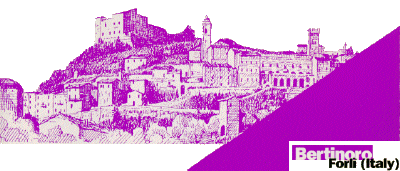
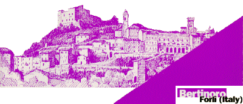

First International
Summer School on
Emerging Trends in Concurrency
TiC'06
July 24-29, 2006
University of Bologna Residential Center
Bertinoro, Italy

|
First International
Summer School on |
July 24-29, 2006 |
 |
General Information
Concurrency is a pervasive and essential characteristic of modern computer systems. Whether it is the design of new hyperthreading techniques in computer architectures, specification of non-blocking data structures and algorithms, implementation of scalable computer farms for handling massive data sets, or the design of a robust software architecture for distributed business processes, a deep understanding of mechanisms and foundations for expressing and controlling concurrency is required.
The goal of the school is to expose graduate students and young researchers to new ideas in concurrent programming from experts in academia and industry. The school provides a unique opportunity for students to have engaging discussions on cutting-edge research with instructors in a focused environment. The school covers one week and alternates monograph courses of 4/6 hours and short courses of 2/3 hours. We also encourage presentations by participants to discuss their current research, and to receive feedback from the audience and instructors.
The school is organised at the Centro Residenziale Universitario of the University of Bologna, situated in Bertinoro, a small village on a scenic hill with a wonderful panorama, in between Forlì and Cesena (about 50 miles south-east of Bologna, 15 miles to the Adriatic sea).
Speakers: Maurice Herlihy, Brown
|
|
Organizers: Nadia Busi, University of Bologna |
Supported by:
|
Attendence will be limited to 40 participants.
We expect to
offer a number of travel grants.
For further information contact the organizers at: tic06@cs.purdue.edu
Topics